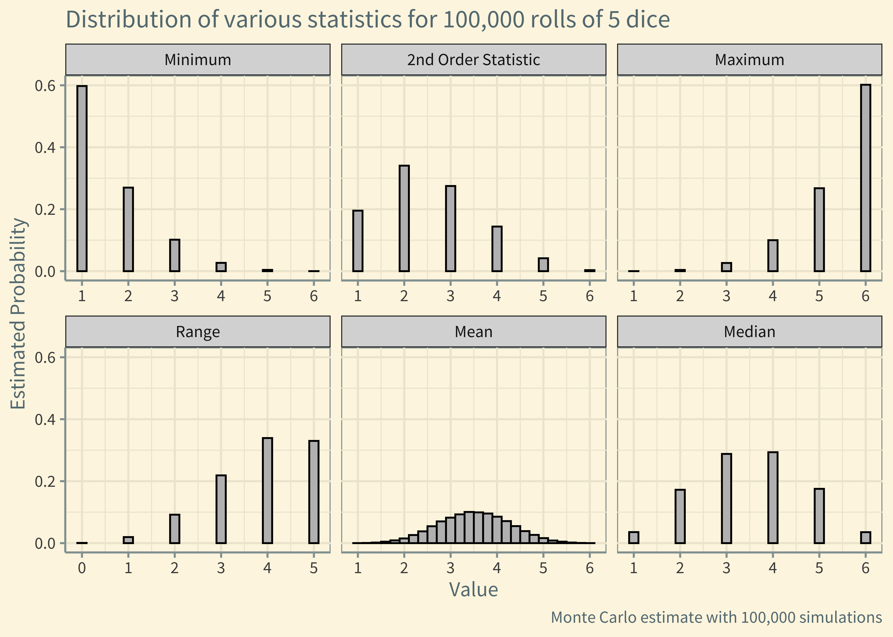

7 What is a Statistic?
7.1 Simulating statistics of dice rolls
# A function to roll `n` dice
roll <- function(n){
sample(x = 1:6, size=n, replace=TRUE)
}
# Returns the nth order statistic of the sample
order_stat <- function(x, n){
x <- sort(x)
return(x[n])
}
# Roll 5 dice 100,000 times
data <- map(1:1e5, ~roll(5))
# Look at first three rolls
data[1:3]## [[1]]
## [1] 3 2 6 4 6
##
## [[2]]
## [1] 5 2 3 5 2
##
## [[3]]
## [1] 1 3 6 1 1
# Generate various statistics for each roll
medians <- map_dbl(data, ~median(.x))
means <- map_dbl(data, ~mean(.x))
minimums <- map_dbl(data, ~min(.x))
maximums <- map_dbl(data, ~max(.x))
second_order_stat <- map_dbl(data, ~order_stat(x=.x, n=2))
ranges <- maximums - minimums
df <- tibble(medians, means, minimums, maximums, second_order_stat, ranges)
df <- pivot_longer(df, cols = everything())
df$name <- recode(df$name,
`medians` = "Median",
`means` = "Mean",
`minimums` = "Minimum",
`maximums` = "Maximum",
`second_order_stat` = "2nd Order Statistic",
`ranges` = "Range")
df$name <- as.factor(df$name)
df$name <- fct_relevel(df$name, c("Minimum", "2nd Order Statistic", "Maximum", "Range", "Mean", "Median"))
df %>%
ggplot(aes(x = value)) +
geom_bar(aes(y = ..prop..), width = 0.2, fill = "gray", color = "black") +
scale_x_continuous(breaks = 0:6) +
facet_wrap(~name, scales = "free_x") +
labs(x = "Value",
y = "Estimated Probability",
title = "Distribution of various statistics for 100,000 rolls of 5 dice",
caption = "Monte Carlo estimate with 100,000 simulations") +
ggthemes::theme_solarized() +
theme(text = element_text(size = 12, family = "Source Sans Pro"))

Figure 7.1: Various order statistics for rolls of 5 standard dice. Probabilities were estimated using 100,000 simulations.